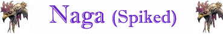

Le Naga sono creature molto intelligenti dotate di svariati poteri magici. Sono capi carismatici che si pongono alla guida dei loro sottoposti, capaci di impiegare subdoli stratagemmi e di posizionare ingegnose trappole per tenere alla larga gli intrusi . Tutte le Naga hanno lunghi corpi serpentini, coperti d i scaglie lucide, con fattezze più o meno umane. La lunghezza del loro corpo, il colore delle sue scaglie e le fattezze umane variano a seconda della tipoligia di Naga incontrata. In ogni caso, gli occhi di tutte le Naga sono svegli, intelligenti e ardono d i una luce interiore quasi ipnotica.

|
|
Ambiente/Habitat | Paludi |
| Frequenza | Molto Raro | |
| Organizzazione | Solitario | |
| Periodo di Attività | Qualsiasi | |
| Dieta | Carnivora | |
| Intelligenza | Highly intelligent (14) | |
| Punti Combattimento | 25 Punti Combattimento | |
| Tesoro | Vedi Sotto | |
| Allineamento Dominante | Caotico Malvagio | |
| Numero di Apparizione | 1 | |
| Classe Armatura | 2 [10 base, -7 corazza, -1 destrezza] | |
| Movimento | 8 esagoni | |
| Dadi Vita | 10 | |
| Thac0 | 10 | |
| Numero di Attacchi | Morso | |
| Danni | 1d6+2 (Taglio) | |
| Poteri Offensivi | Istinto Predatorio; Sputo Velenoso; Vortice di Spine; Capacità Magiche; |
|
| Poteri Difensivi | Spina Dorsale Velenosa Superiore; | |
| Poteri Generici | Camminata Acquatica; | |
| Vulnerabilità | Nessuna; | |
| Resistenza alla Magia | Nessuna; | |
| Sensi | Vista Comune, Sensi Superiori; | |
| Dimensioni | Huge (6 m. lunghezza) | |
| Morale | Champion (15) | |
| Valore in Punti Esperienza | 5240 |
|
TIRI SALVEZZA DELLA CREATURA |
|||||||
| CORAGGIO | ENERGIA VITALE | MAGIA | MALATTIA | MENTE | RIFLESSI | ROBUSTEZZA | VELENO |
| 0 | 0 | +10% | +5% | +5% | 0 | 0 | +10% |
| 39 | 42 | 44 | 32 | 47 | 49 | 38 | 19 |
Descrizione
Questo orribile essere ha le sembianze di un enorme serpente dalle scaglie color ocra dalle chiazze giallo chiare posizionate su tutta la sua lunghezza ad intervalli regolari. Il dorso della creatura è ricoperto da lunghe e pericolose spine, mentre la sua testa ha le fattezze di viso di donna deformato dall'unione con l'essere serpentiforme. Capelli radi e stopposi di colore giallastro appaino sparuti sul capo direttamente unito al corpo di serpente. Una lunga lingua biforcuta esce costantemente dalla sua bocca assaggiando l'aria come per cercare le tracce invisibili delle sue prede. I suoi grandi occhi allungati brillano di intelligenza.
Combat
Anche questa Naga, come tutte le altre, confida nei suoi poteri magici più che nelle sue abilità di combattimento in corpo a corpo. A differenza di altre specie di Naga, però, la Naga Spinosa è dotata di buone capacità combattive essendo in grado di impegnare in combattimento anche esperti guerrieri.
ISTINTO PREDATORIO (Moderate Special Ability): La creatura possiede un forte istinto predatorio, per tale motivo costei riceve un bonus costante di +1 alla Thac0 con i suoi attacchi.
VORTICE DI SPINE (Powerful Special Ability): In luogo di effettuare una qualsiasi altra azione complessa questa creatura può girare vorticosamente su se stessa al fine di colpire i propri avversari con le sue spine. Si tratta di un'azione complessa avente fattore iniziativa pari a +5. Tutti coloro si trovano in una posizione di corpo a corpo con la creatura devono superare un tiro salvezza su riflessi per evitare di essere colpiti dalle spine. Se il tiro salvezza fallisce costoro subiranno 1d6 danni da punta e l'effetto del seguente veleno: Tipologia Insinuativo, Onset 1 round, Effetti 0/12, Delay 3 round, Tiro Salvezza senza modificatori, Assuefazione nessuna. Una volta utilizzata questa abilità speciale la creatura non può utilizzarla nuovamente nei tre round di combattimento immediatamente successivi.
SPUTO VELENOSO (Powerful Special Ability): In luogo di effettuare una qualsiasi altra azione complessa questa creatura può sputare saliva velenosa. Si tratta di un'azione complessa avente fattore iniziativa pari a +1. La vittima deve trovarsi entro 9 metri di distanza ed ha diritto ad un tiro salvezza su riflessi per evitarlo (senza l'applicazione del modificatore dovuto alla differenza di livello). Se il tiro salvezza fallisce la vittima subirà il seguente effetto velenoso: Tipologia Contatto, Onset 1 round, Effetti 6/16, Delay 2 round, Tiro Salvezza - 1, Assuefazione nessuna. Una volta utilizzata questa abilità speciale la creatura non può utilizzarla nuovamente nei tre round di combattimento immediatamente successivi.
CAPACITA' MAGICHE (Typical Ability): Queste creature possono lanciare alcune volte al giorno alcuni incantesimi. Tutti gli incantesimi lanciati si considerano avere solo componente vocale. Per lanciare questi incantesimi, infatti, la creatura non necessita dell'utilizzo di componenti materiali o somatici. Tutte le magie si considereranno utilizzate al 7° livello di lancio.
MAGHI - I LIVELLO DI POTERE
Mud in the Eyes (Evocation) - 2 volte al giorno
Range: 15
metri
Components: V
Duration: Istantanea
Casting Time: 2
Area of
Effect: Una creatura
Saving Throw: Negates
Quando il mago utilizza questa magia costui lancia un ammasso di fango negli occhi della sua vittima. Questo incantesimo non può essere lanciato validamente su creature non dotate di organi visivi comuni di tipo organico (occhi). La vittima ha diritto a superare un tiro salvezza su riflessi per evitare il getto di fango. Se il tiro salvezza fallisce la vittima sarà colpita dal fango ed accecata di conseguenza fino a che non si pulirà gli occhi. La vittima potrà liberarsi dal fango pulendosi con un'azione complessa utilizzata solo per questo scopo. In particolare, pulendosi la prima volta, avrà comunque la vista parzialmente offuscata dal residuo fangoso vedendosi applicare ancora un modificatore di -2 al tiro per colpire e del 20% di fallire nel lancio delle magie a distanza; pulendosi una seconda volta, invece, riacquisterà la normale vista. Si noti che se la creatura ha a disposizione acqua per pulirsi, con una sola azione complessa potrà liberarsi interamente dal fango riacquistando subito la vista normale. Costoro, quindi, potranno riacquistare la normale vista attraverso l'utilizzo di una sola azione complessa.
Lesser Confusion (Charm) - 2 volte al giorno
Range: 15
metri
Components: V
Duration: 1 round + 1 round per livello
Casting Time: 1 round
Area of Effect: One creature
Saving Throw: Negates
Quando il
mago lancia questo incantesimo la vittima dovrà superare un tiro salvezza su
mente. Se la vittima fallisce il tiro salvezza la stessa sarà confusa e, a
partire dal round successivo, dovrà effettuare, per l'intera durata
dell'incantesimo, un tiro di 1d6 per determinare le proprie azioni. Si consulti
la seguente tabella per determinare all'inizio del round (nella fase delle
intenzioni) l'azione della vittima:
1-2) La vittima potrà agire normalmente.
3-4) La vittima attaccherà la creatura a costei più vicina (se vi sono creature
equidistanti, verificare a sorte quella attaccata).
5-6) La vittima resterà ferma sul posto senza compiere alcuna azione (non subirà
però penalità alla propria classe armatura).
Il tiro per determinare l'azione della vittima dovrà essere ripetuto ogni
singolo round. Si noti che qualora si verifichi il risultato di attacco alla
creatura più vicina (3-4) la vittima effettuerà i suoi attacchi comuni più
lesivi (scegliendo ad es. l'arma che possa provocare più danni) senza però
effettuare attacchi o poteri speciali, senza lanciare incantesimi e senza
utilizzare punti combattimento.
MAGHI - II LIVELLO DI POTERE
Melf's Acid Arrow (Alteration) - 2 volte al giorno
Range: 24
metri + 3 metri ogni 2 livelli oltre il primo
Components: V
Duration: Istantanea
Casting Time: 2
Area of Effect: Una creatura
Saving Throw: Special
Con questo incantesimo il mago richiama ad esistenza un dardo da balestra
leggero che scaglierà verso un bersaglio selezionato che si trovi entro il
raggio d'azione dell'incantesimo (24 metri al 1° e 2° livello, 27 metri al 3° e
4° livello, 30 metri al 5° e 6° livello, e così via). Il mago, quindi, dovrà
effettuare un tiro per colpire come se fosse un guerriero di livello pari al
livello di lancio della magia. Se il dardo colpisce il bersaglio provocherà
1d6+1 danni da penetrazione (saranno comuni danni provocati dal proiettile). Una
volta colpita la vittima, alla fine del round ed alla fine di un ammontare di
ulteriori round pari ad uno ogni tre livelli di lancio della magia (dal 1° al 2°
livello solo alla fine del round di lancio, dal 3° livello al 5° livello alla
fine del round di lancio e del successivo round, dal 6° livello all'8° livello
alla fine del round di lancio e dei due successivi rounds, e così via fino ad un
massimo totale di quattro round di danno a partire dal 9° livello di lancio) dal
dardo sarà spruzzato sulla creatura un forte acido in grado di produrre 2d4
danni da acido. Contro tale effetto secondario la vittima avrà diritto ad un
tiro salvezza su robustezza. Se il tiro salvezza riesce la vittima subirà solo
1d4 danni da acido. Se il tiro salvezza fallisce la vittima subirà danno da
acido pieno e potrà effettuare un nuovo tiro salvezza alla fine del round
successivo. Al termine della magia il dardo e l'acido svaniranno
definitivamente.
Jet of Steam (Evocation) - 2 volte al giorno
Range: 9 metri
Components: V
Duration: Istantanea
Casting Time:
2
Area of Effect:
Una creatura
Saving Throw: Negates
Quando il mago lancia questo incantesimo un getto di vapore sottile ma estremamente bollente parte dalle sue mani in direzione della vittima selezionata. La vittima ha diritto a superare un tiro salvezza su riflessi per evitare il getto di vapore. Se il tiro salvezza fallisce la vittima subirà 1d6 danni da calore + 2 danni per livello di lancio (fino ad un massimo di 1d6+18 al 9° livello di lancio).
SPINA DORSALE VELENOSA SUPERIORE (Moderate Special Ability): Le spine dorsali di questa creatura sono velenose. Per questo motivo chi attacca in corpo a corpo questa creatura da una posizione ad essa adiacente ed effettua un tiro per colpire naturale contro la stessa pari ad 1, 2 o 3 (indipendentemente dall'esito dell'attacco e dell'eventuale risultato critico) si sarà punto su una di queste spine subendo 1d6 danni da punta e l'effetto del seguente veleno: Tipologia Insinuativo, Onset 1 round, Effetti 0/12, Delay 3 round, Tiro Salvezza senza modificatori, Assuefazione nessuna. Si noti che qualora una creatura entri in combattimento ravvicinato o effettui attacchi di stritolamento o similari nei confronti della creatura avrà il 50% di possibilità di pungersi con le spine nel corso di ogni round di combattimento (possibilità che si cumula a quella prevista per gli eventuali attacchi).
CAMMINATA
ACQUATICA
(Lesser Special
Ability): Questa
creatura è in grado di spostarsi camminando con il corpo parzialmente immerso
nell'acqua riducendo di una classe la penalità al movimento che le sarebbe
normalmente applicata. Si noti che quest'abilità non riduce l'eventuale penalità
al combattimento prevista per il corpo parzialmente immerso nell'acqua.
Habitat/Society
X.
Ecology
X.
Mystical Resource Sourge
(Cuore) Quantità: 1, Presenza 50% - Scuola di Magia:
Enchantment
- Qualità della Risorsa:
Uncommon.
Mystical Resource Sourge
(Lingua) Quantità: 1, Presenza 50%
- Effetto Particolare:
Veleno
- Qualità della Risorsa:
Uncommon.
Tesoro
Le Naga Spinose collezionano oggetti magici e preziosi conoscendone il valore di scambio. Utilizzano, infatti, questi tesori per pagare sottoposti o per scambiarli con oggetti di cui necessitano.
| % di ritrovamento | TIPOLOGIA | Ammontare Ritrovato |
| 33 % | Gemme | 2d6 |
| 25 % | Oggetti Preziosi | 1d4 |
| 50 % | Oggetti Comuni | 1d2 |
| 50 % | Monete d'oro | 5d6 * 75 + 1d20+5 * 50 |
| 50 % | Monete d'argento | 5d6 * 100 + 2d10 * 100 |
| 30 % + 20 % + 10 % | Oggetto magico | 1 1d10: (1-6) common (7-10) rare (tranne liquidi magici e pergamene) |
| 25 % + 15 % | Pergamene | 1 1d10: (1-9) common (10) rare |
| 25 % + 15 % | Liquidi Magici | 1d3 |